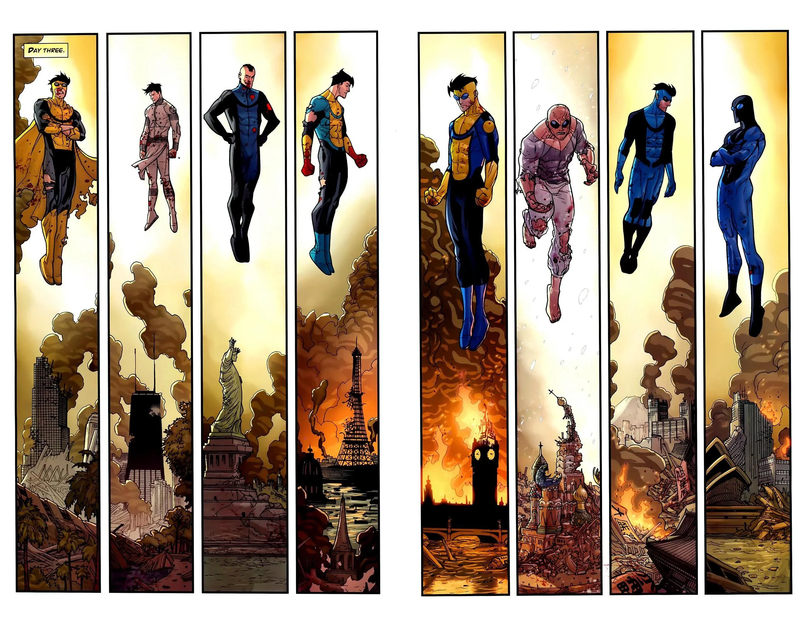
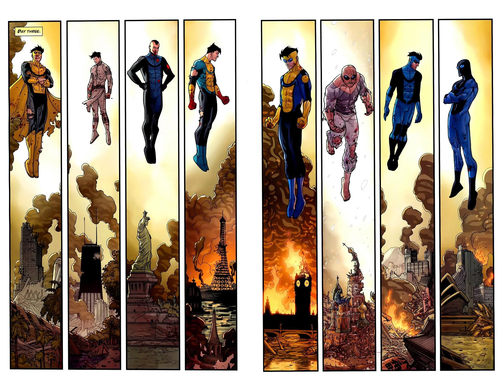
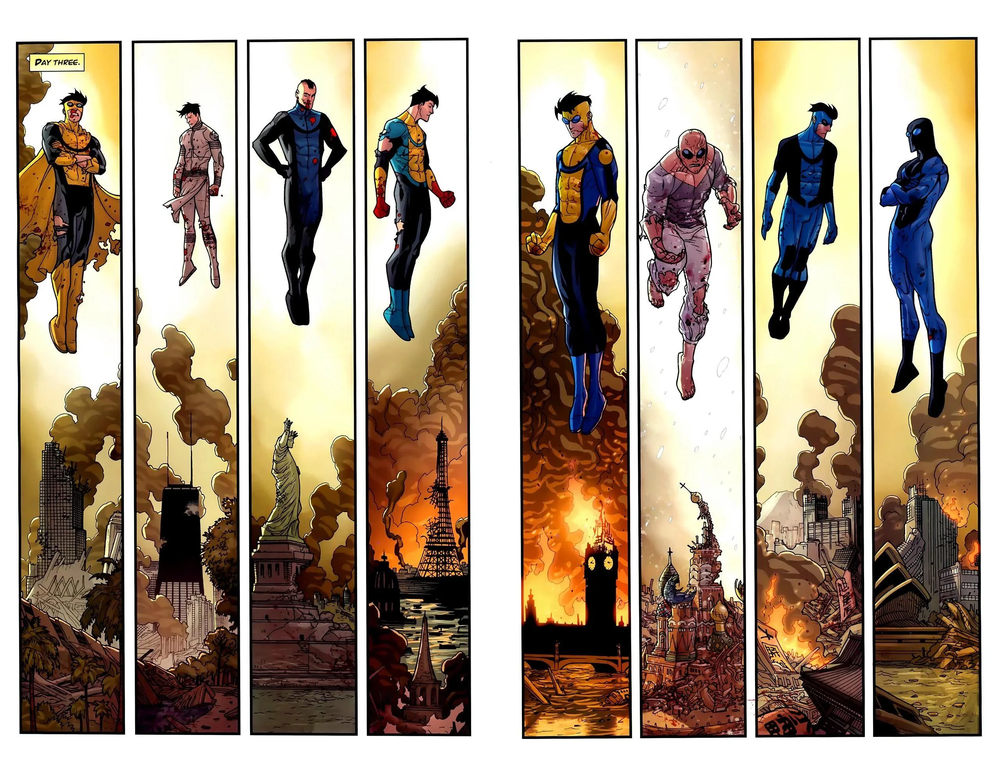

Angstrom Levy, em um estado quase morto causado pelo invencível em um ataque de raiva é salvo pelos melhores medicos do universo, após sua recuperação ele decide se vingar e tem a ideia de sujar a imagem de invencível, trazendo a ele medo, ódio e dor. Então ele junta diversas versões malignas do invencível, com seu poder de abrir portais pelas dimesões, e as solta no universo original, onde começa o evento "A guerra invencível", esse evento ocorre no episodio 7 da terceira temporada com uma grande duração. O incidente é marcada por destruição, caos, tragédia e brutalidade.
